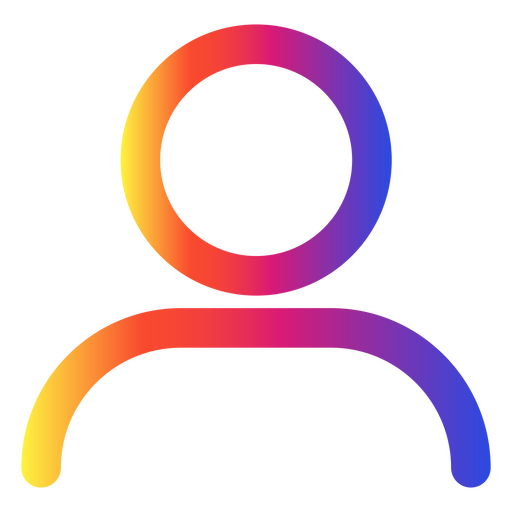

<body>
    <div class="main-container" [class.example-is-mobile]="mobileQuery.matches">
        <mat-toolbar class="main-toolbar">
            <button mat-icon-button (click)="snav.toggle()">
                <mat-icon>menu</mat-icon>
            </button>
            
            <h1 class="h1">NotesKeep</h1>
            <div class="form-Search" style="margin-left: 95px">
                <mat-form-field class="search" appearance="fill">
                    <span style="background-color: none;" mat-icon-button class="search-icon">
                        
                    </span>
                    <input class="search-input" matInput placeholder="Search" autocomplete="off" />

                </mat-form-field>
            </div>
            <div class="header-btn">
                <button mat-icon-button class="header-icon">
                    
                </button>
                <button mat-icon-button class="header-icon">
                    
                </button>
                <button mat-icon-button class="header-icon">
                    
                </button>
            </div>

            <div class="set-profile">
                <button mat-icon-button class="header-icon">
                    
                </button>
                <button mat-icon-button class="header-icon">
                    
                </button>
            </div>

        </mat-toolbar>

        <mat-sidenav-container class="example-sidenav-container" [style.marginTop.px]="mobileQuery.matches ? 56 : 0">
            <mat-sidenav class="side-nav" #snav [mode]="mobileQuery.matches ? 'over' : 'side'"
                [fixedInViewport]="mobileQuery.matches" fixedTopGap="56">
                <mat-nav-list class="menu-items">
                    <a mat-list-item class="menus"> Notes</a>
                    <a mat-list-item class="menus">  Reminders</a>
                    <a mat-list-item class="menus">  Edit labels</a>
                    <a mat-list-item class="menus">  Archive</a>
                    <a mat-list-item class="menus">  Bin</a>


                </mat-nav-list>
            </mat-sidenav>

            <mat-sidenav-content>
                <div style="height:91.8vh; background-color: white;">
                </div>

            </mat-sidenav-content>
        </mat-sidenav-container>
    </div>
</body>